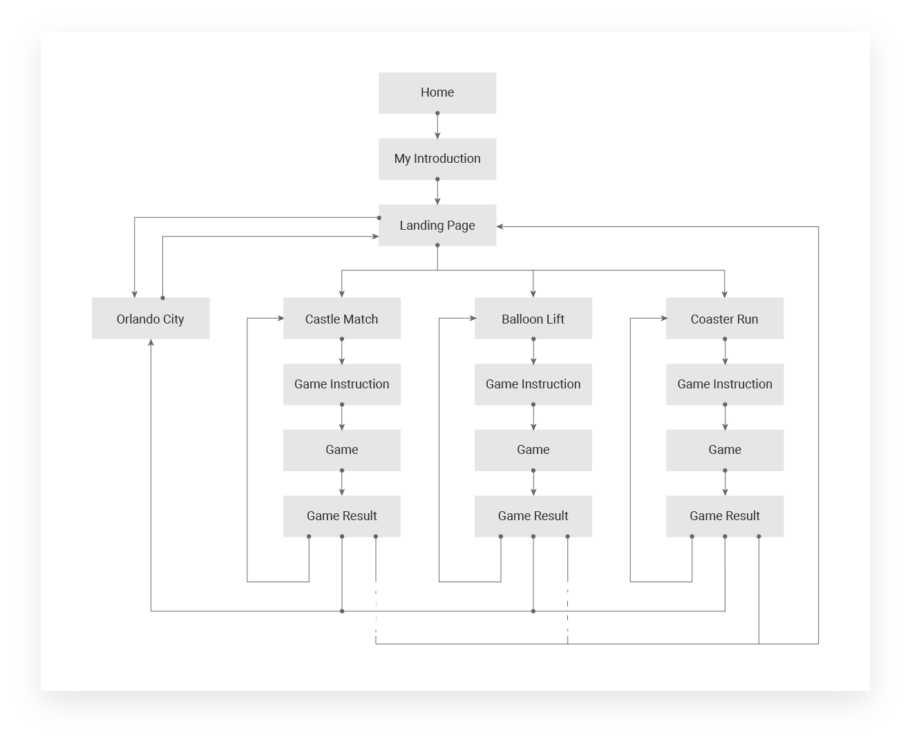
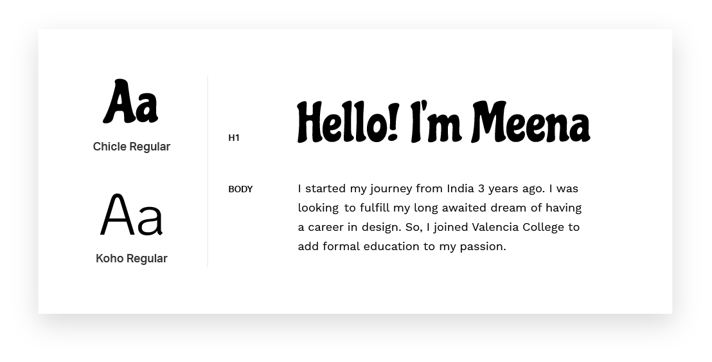
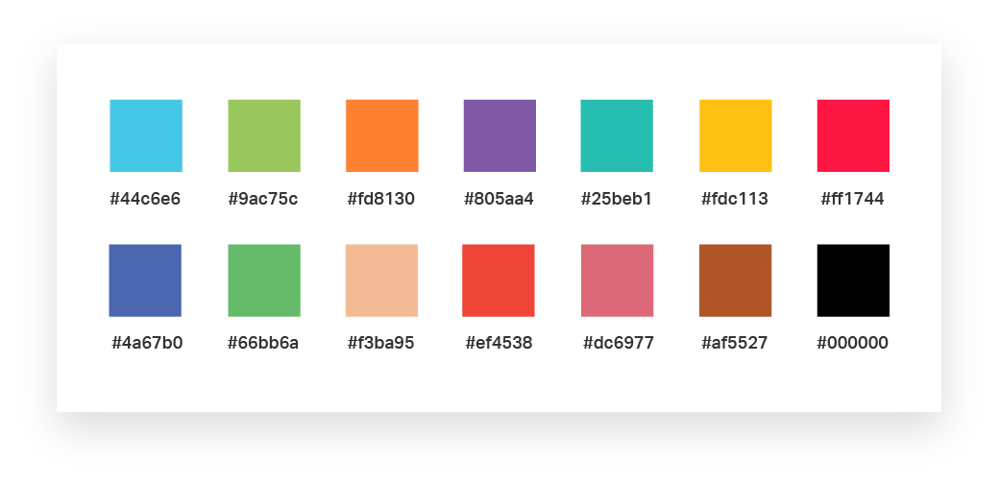
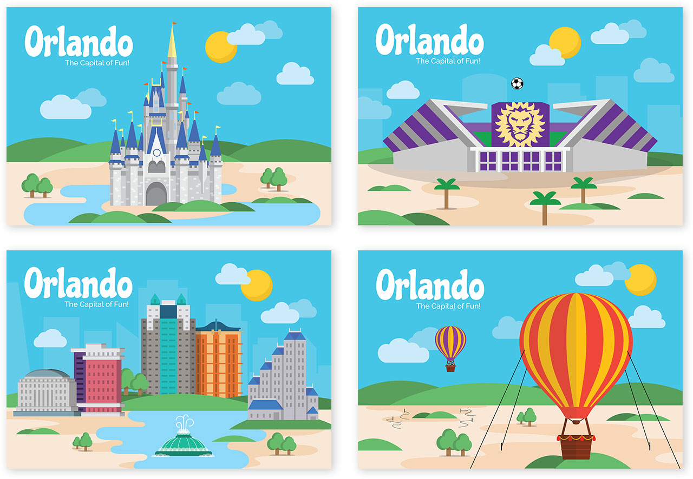

Experience Orlando
I was selected for the AIGA Orlando mentorship 2017. The goal of the six month program was to design and develop a project to present at the Annual AIGA spot showcase, an event visited by local design professionals and students.
Mentor: Ricardo De Azua, the Art Director of Full Sail University
Scroll down
Description
Goal
My goal for the mentorship was to come up with an idea out of my comfort zone and try a new design style. Also, I wanted to learn different design techniques from my mentor. My goal for the project was to have something that would attract visitors to my booth and keep them engaged.
Target Audience
The spot showcase targets design professionals and students between the ages of 20 - 40.
The Idea
After a lot of discussion with my mentor, I came up with the idea of designing a fun and interactive website. I wanted to include a few games in the website that everyone would enjoy playing. Since the event was in Orlando, I wanted to incorporate an Orlando theme to connect with the local crowd. To give it a more personal touch, I planned to depict the city based on my experiences in Orlando. I planned to illustrate the city the way I saw it.
The landmarks I picked were:
- Downtown Orlando
- Orlando City soccer stadium
- Universal
- Disney
- Orlando Eye
- Hot air balloon rides
- Kayaking in the lakes
I wanted to link the games with some of the landmarks. The Games I wanted to include were:
- Castle Match
Match cards hidden in castle windows. The castle represents Disney’s Magic kingdom. - Coaster Run
Match the arrows on the screen to keep the roller coaster moving. The rollercoaster represents Hulk in Universal. - Balloon Lift
Avoid obstacles falling from the sky while collecting rewarding items. This represents the hot air balloon rides.
Challenges
- Design and Develop games which I had never done before.
- I had never designed a website full of illustrations.
User Flow
I started my design by thinking about how I wanted the user to interact with my website. I planned to add my introduction at the beginning of the website and then lead the user into my view of Orlando. Then the user can play a game of their choice.
{kind=link}
{kind=link}
{kind=link}
Type Study
I chose Chicle for headings as it is a playful font and goes with the fun theme of the website. I paired it with Koho, which is also a playful looking typeface that is easier to grasp visually.
{kind=link}
Color Study
I chose a big swatch palette with bright colors that are visually attractive and grab attention.This would go with he fun theme of the website and make it interesting.
{kind=link}
City Mockup
{kind=link}
Branding
I created souvenir postcards for Orlando using the illustrations of landmarks from the website. I used these as giveaways at the spot showcase.
{kind=link}
Web Development
I learnt a lot of development techniques while building this website. It was built using HTML, CSS and JQuery primarily. I put in a lot of time on animations. All the illustrations were converted to SVGs and animated using CSS keyframes. I took some time to learn to code with tweenJS for animating the roller coaster.
Result
For the booth at the showcase, I set up a big screen with the video of the website along with a monitor where people could interact with it. I had a lot of visitors to my booth and people loved the concept and the idea behind it. People were having fun interacting with the website. In particular, they enjoyed a lot playing the games. I was very happy with the success of the project. I also got a lot of useful feedback from the users.
Improvements
Based on the feedback from the users at the showcase, I listed out the improvements that can be made in the next iteration.
- The game instruction pages need to have more text for the users to understand better.
- Running a lot of animations in the city page does not perform very well. They need to be run only when the elements are visible.